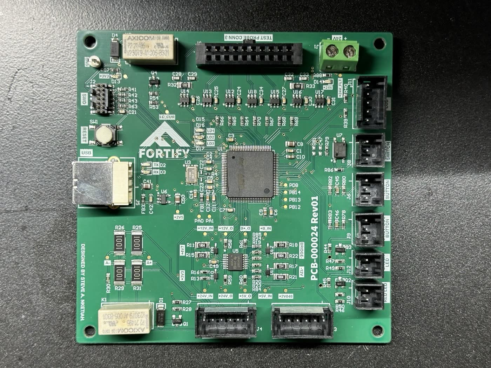
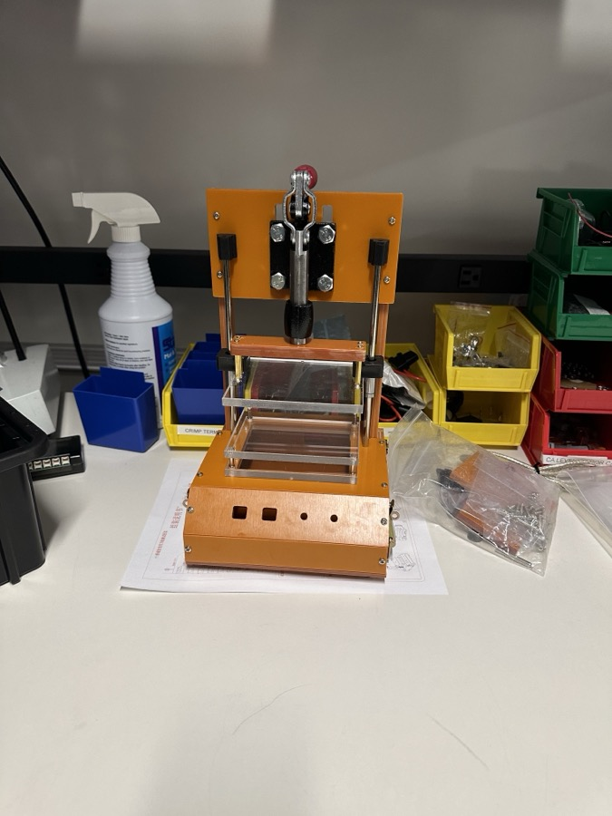
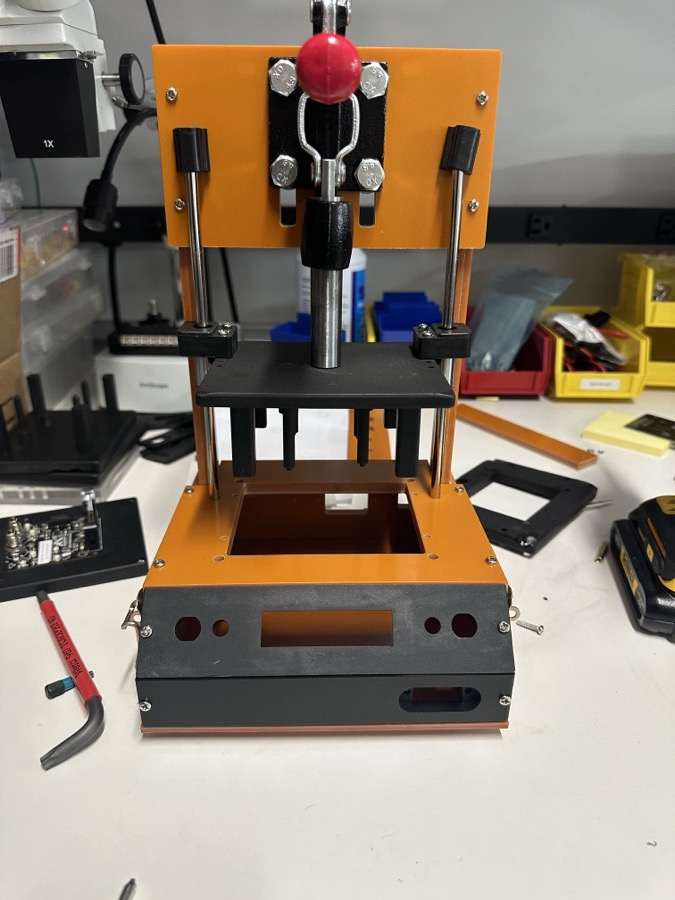
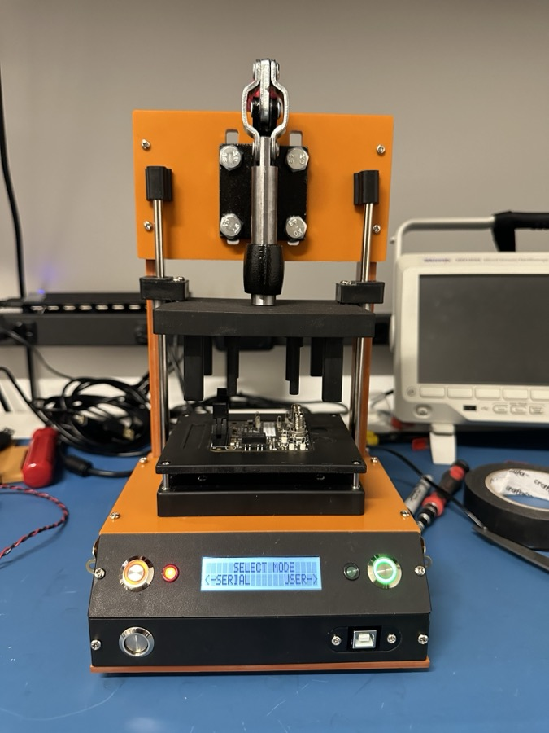
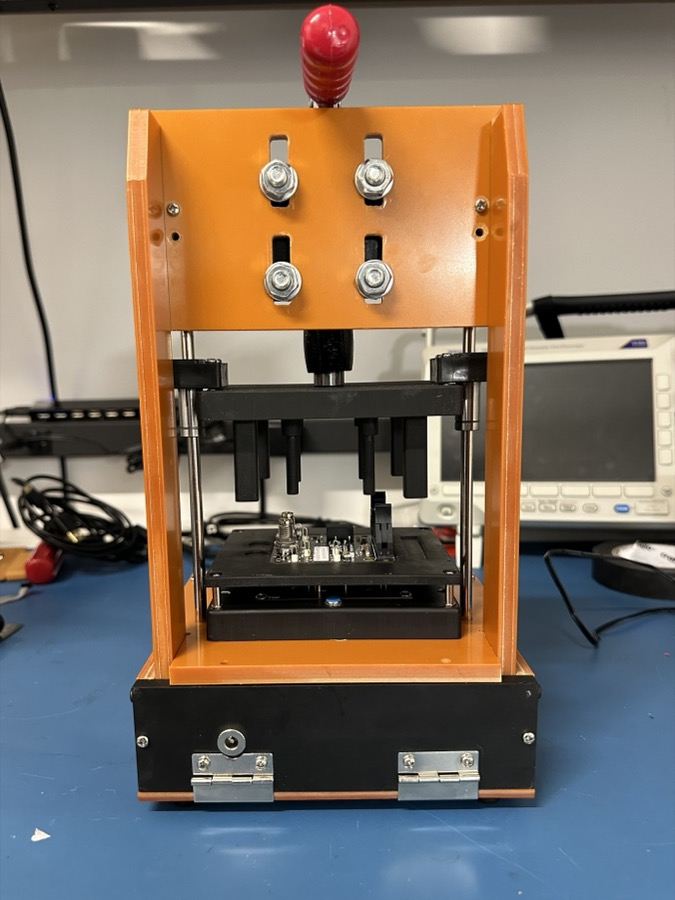
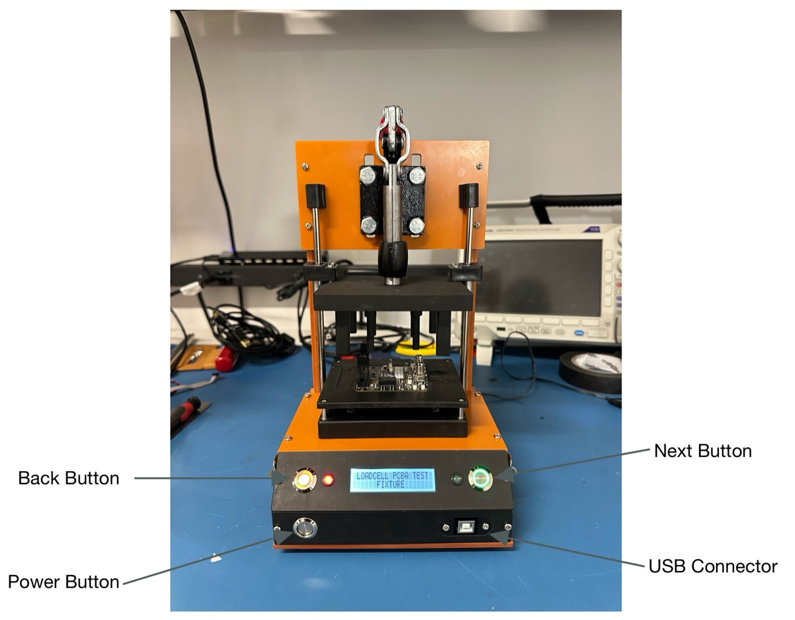
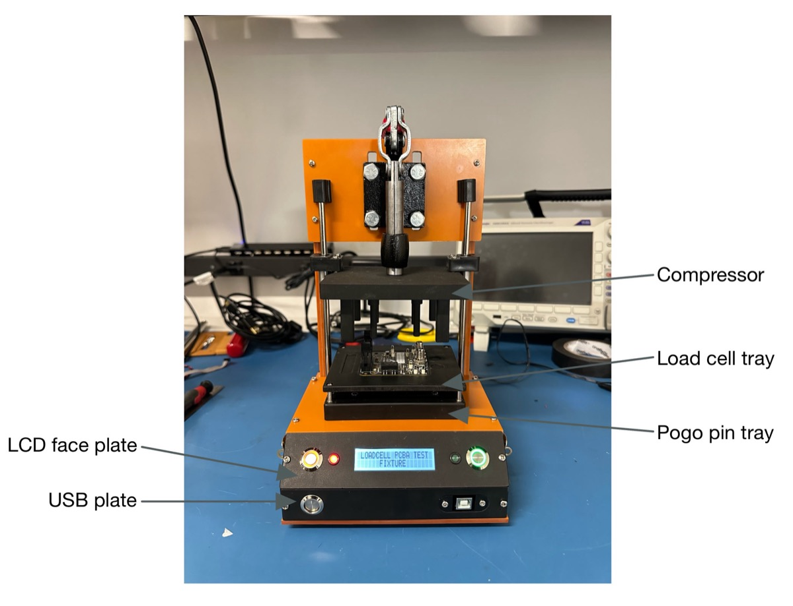

Overview
This project was developed during my first Co-op, where I designed a bed-of-nails fixture to test a production board. The goal was to significantly reduce the testing time of the PCBs from 10 minutes to just 30 seconds, improving efficiency and throughput in the manufacturing process.
Requirements
- PCBA to be placed on a jig that contains test probes for all circuits to check
- Test should be automated (or able to scale to automation)
- Things to check:
- Confirm all power rails (voltage measurement of some sort), all referenced to GND
- 24V_IN
- 5V0
- +12V
- 12V
- 3V3
- 4V7
- 2V048
- Bridge+
- Bridge-
- Apply a simulated load to act as load cell arm
- Zero load
- Some expected amount of force
- Read load cell data over SPI
- Need to convert from single-ended (SE) SPI to differential
- Same for other ADS1246 signals
- Confirm all power rails (voltage measurement of some sort), all referenced to GND
PCB
The brain of this PCB is the STM32F429VET6. It is responsible for taking all the measurements and communicating with the UUT. The board also included high-precision op-amps to buffer and step down the voltage. Since the Unit Under Test transmits and receives the SPI data as differential signals, there were differential to single-ended and single-ended to differential ICs for communication. A USB-UART IC was also included for serial communication.

Firmware
STM32CubeIDE was used for configuring and programming the microcontroller, with the code written in C and organized as a state machine. GPIO external interrupts were used to facilitate state transitions. Additionally, the driver for the I2C display was custom-built from the ground up.
Mechanical
The test jig was adapted from a PCB test fixture sourced from AliExpress, but required several modifications to meet our specific needs. A custom PCB was also designed, incorporating pogo pins to make contact with pads on the underside of the UUT for voltage measurement and communication.





